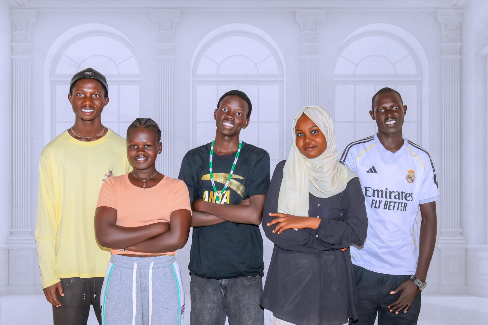

Our Vision
“To drive the digital transformation of Kakuma and Kalobeyei, creating a future where every local organisation and individual can thrive online.”
ABOUT KDA / 01
Kakuma Digital Agency is a youth-led digital agency based in Kakuma, Turkana County. We provide website development, graphic design, branding and digital marketing services to businesses, CBOs, NGOs, schools and community organisations.

OUR PURPOSE
Our purpose is to help organisations use digital tools to communicate clearly, earn trust, reach more people and create new opportunities.
Talk to Our Team ↗OUR DIRECTION
“To drive the digital transformation of Kakuma and Kalobeyei, creating a future where every local organisation and individual can thrive online.”
“To bridge the digital divide in Kakuma and Kalobeyei by providing effective website development, graphic design and digital marketing solutions that empower local businesses, organisations and humanitarian initiatives.”
HOW WE WORK
We listen carefully to your organisation, goals, audience and budget before recommending a solution.
We focus on practical work that helps you communicate clearly and makes everyday tasks easier.
We improve our skills and use suitable tools to deliver better work for our clients.
We work with clients as partners and support local growth through useful digital services.
> KDA_ORIGIN
LOCATION: KAKUMA, TURKANAMODE: COLLABORATIVEMISSION: USEFUL DIGITAL SERVICESSTATUS: READY TO SUPPORT LOCAL ORGANISATIONSWHY WORK WITH US
We understand the realities of working in Kakuma, Kalobeyei and across Turkana. Clients can work directly with a local team that communicates clearly, designs for mobile users and provides practical support.
Explore our services ↗